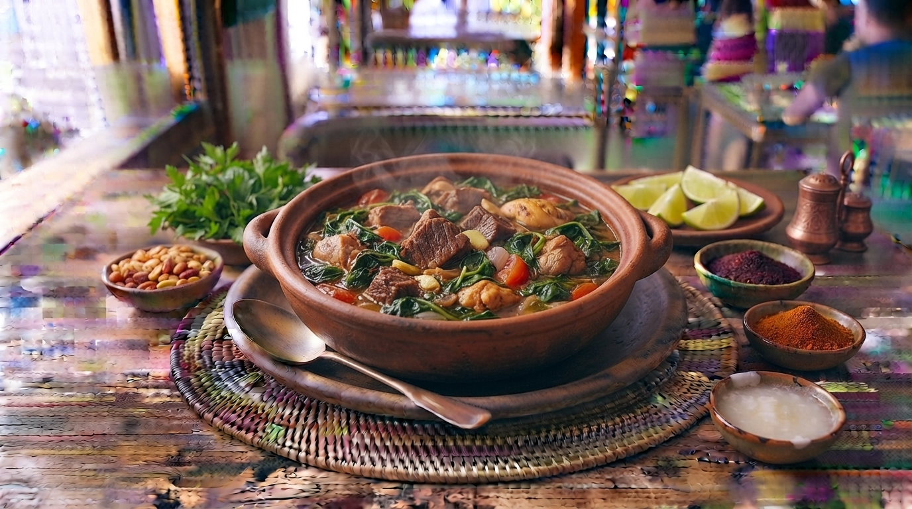

Romazava (Cozido Tradicional)
O prato nacional de Madagascar. Um rico guisado de carne bovina e suína cozinhado com uma variedade de folhas verdes locais (anamamy), gengibre, tomate e alho.

⏱️ Tempo: 1h 30min
🍽️ Rendimento: 6 porções
🔥 Dificuldade: Média
Ingredientes
- 600g de carne bovina cortada em cubos
- 300g de carne de porco cortada em cubos
- 400g de espinafres ou couve picada (para substituir as folhas locais)
- 2 tomates grandes picados
- 1 cebola grande e 3 dentes de alho picados
- 1 pedaço de gengibre ralado
- Azeite ou óleo, sal e pimenta a gosto
Modo de Preparo
- Numa panela funda, doure os cubos de carne bovina e suína no óleo.
- Adicione a cebola, o alho e o gengibre ralado, refogando bem até perfumar.
- Junte os tomates picados e adicione água até cobrir toda a carne. Deixe cozinhar em lume brando por 1 hora até a carne ficar tenra.
- Adicione as folhas verdes picadas e deixe cozinhar por mais 15 minutos até murcharem e o caldo apurar.
- Sirva tradicionalmente acompanhado de arroz branco.